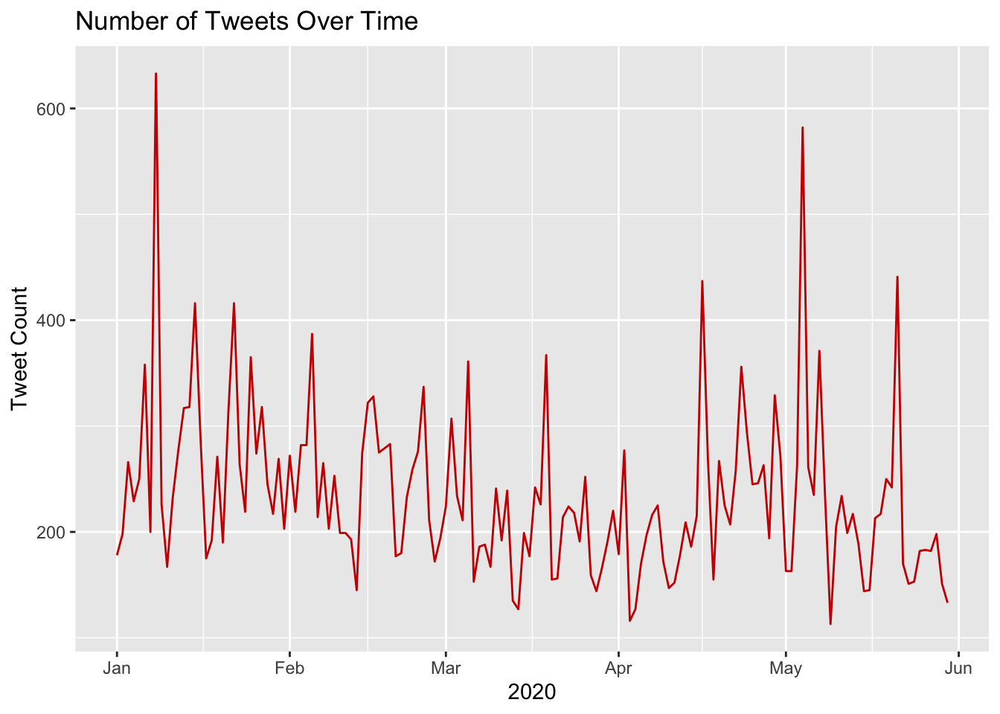
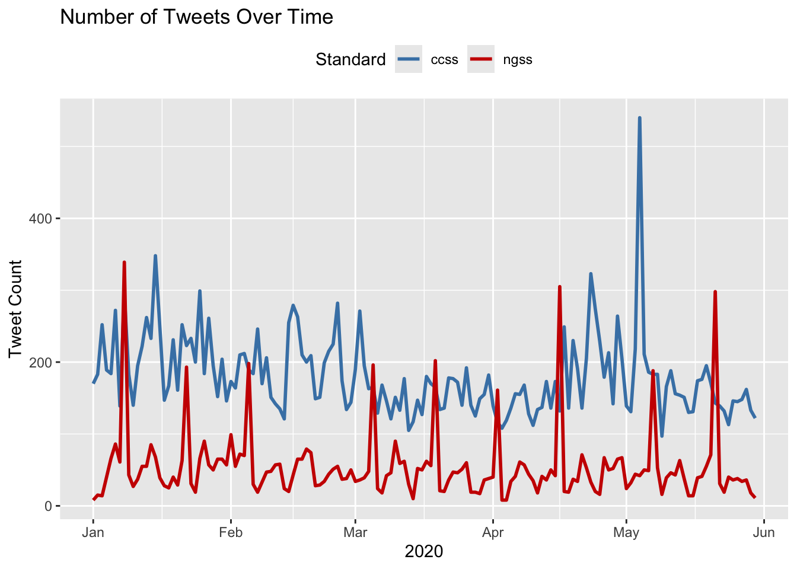
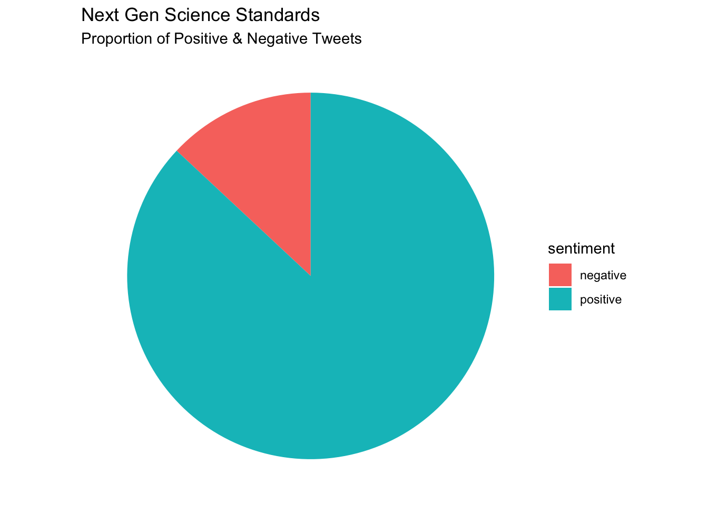
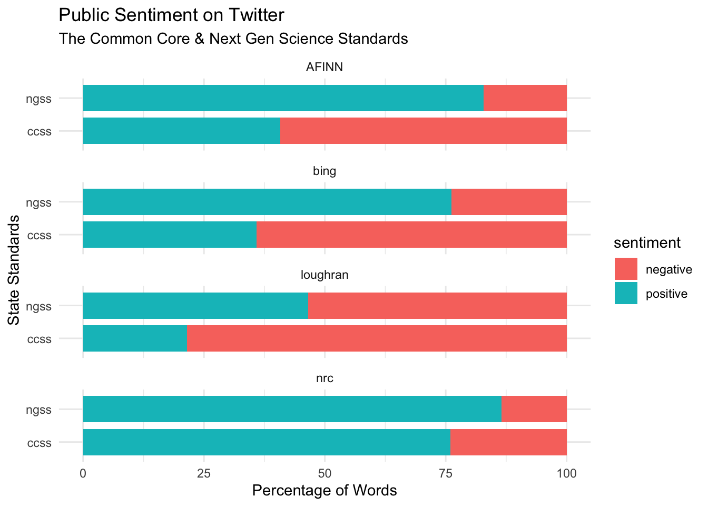

library(academictwitteR)
library(tidyverse)
ccss_tweets_2021 <-
get_all_tweets('(#commoncore OR "common core") -is:retweet lang:en',
"2021-01-01T00:00:00Z",
"2021-05-31T00:00:00Z",
bearer_token,
data_path = "ccss-data/",
bind_tweets = FALSE)
ccss_tweets <- bind_tweet_jsons(data_path = "ccss-data/") |>
select(text,
created_at,
author_id,
id,
conversation_id,
source,
possibly_sensitive,
in_reply_to_user_id)
write_csv(ccss_tweets, "data/ccss-tweets.csv")Twitter Sentiment Towards State Standards
TM Module 2: Case Study Key
0. INTRODUCTION
Data sources such as digital learning environments and administrative data systems, as well as data produced by social media websites and the mass digitization of academic and practitioner publications, hold enormous potential to address a range of pressing problems in education, but collecting and analyzing text-based data also presents unique challenges. This week, our case study is guided by my colleague Josh Rosenberg’s study, Understanding Public Sentiment about Educational Reforms: The Next Generation Science Standards on Twitter. We will focus on conducting a very simplistic “replication study” by comparing the sentiment of tweets about the Next Generation Science Standards (NGSS) and Common Core State Standards (CCSS) in order to better understand public reaction to these two curriculum reform efforts.
Case Study Focus
For Module 2, our focus will be using data that was collected using a now sadly depricated Twitter API and using sentiment lexicons to help gauge public opinion about those topics or tweets. The following diagram from Silge & Robinson Silge and Robinson (2017) nicely illustrates the process of using text mining {tidverse} functions to analyze the sentiment of text:

For Module 2, our case study will cover the following topics:
- Prepare: Prior to analysis, it’s critical to understand the context and data sources you’re working with so you can formulate useful and answerable questions. We’ll take a quick look at Dr. Rosenberg’s study as how data through Twitter’s now deprecated API.
- Wrangle: In section 2 we revisit tidying and tokenizing text from Module 1 and learn some new functions for appending sentiment scores to our tweets using the AFFIN, bing, and nrc sentiment lexicons.
- Explore: In section 3, we use simple summary statistics and basic data visualization to compare sentiment between NGSS and CCSS tweets.
- Model: We explore the {vader} package to model the sentiment of tweets, as well as examine a mixed-effects model used by Rosenberg et al. to analyze the sentiment of tweets.
- Communicate: Finally, I’ll demonstrated a simple data product for communicating findings from our analysis.
1. PREPARE
To help us better understand the context, questions, and data sources we’ll be using in Module 2, this section will focus on the following topics:
- Context. We take a quick look at the Rosenberg et al. Rosenberg et al. (2020) article, Understanding Public Sentiment about Educational Reforms: The Next Generation Science Standards on Twitter, including the purpose of the study, questions explored, and findings.
- Questions. We’ll formulate some basic questions that we’ll use to guide our analysis, attempting to replicate some of the findings by Rosenberg et al.
- Twitter API. We describe the process used to pull data from old Twitter API.
1a. Some Context
Twitter and the Next Generation Science Standards
Abstract
While the Next Generation Science Standards (NGSS) are a long-standing and widespread standards-based educational reform effort, they have received less public attention, and no studies have explored the sentiment of the views of multiple stakeholders toward them. To establish how public sentiment about this reform might be similar to or different from past efforts, we applied a suite of data science techniques to posts about the standards on Twitter from 2010-2020 (N = 571,378) from 87,719 users. Applying data science techniques to identify teachers and to estimate tweet sentiment, we found that the public sentiment towards the NGSS is overwhelmingly positive—33 times more so than for the CCSS. Mixed effects models indicated that sentiment became more positive over time and that teachers, in particular, showed a more positive sentiment towards the NGSS. We discuss implications for educational reform efforts and the use of data science methods for understanding their implementation.
Data Sources
Similar to data we’ll be using for this case study, Rosenberg et al. used publicly accessible data from Twitter collected using the Full-Archive Twitter API and the {rtweet} package in R. Specifically, the authors accessed tweets and user information from the hashtag-based #NGSSchat online community, all tweets that included any of the following phrases, with “/” indicating an additional phrase featuring the respective plural form: “ngss”, “next generation science standard/s”, “next gen science standard/s”.
Data used in this case study was obtained prior to Twitter’s transition to X, and used the now retired {academictwitter} package along with an Academic Research developer account, which is sadly no longer accessible. The Twitter API v2 endpoints allowed researchers to access the full twitter archive, unlike a standard developer account. Data includes all tweets from January through May of 2020 and included the following terms: #ccss, common core, #ngsschat, ngss.
Below is an example of the code used to retrieve data for this case study. This code is set not to execute and will NOT run, but it does illustrate the search query used, variables selected, and time frame.
Analysis
The authors determined Tweet sentiment using the Java version of SentiStrength to assign tweets to two 5-point scales of sentiment, one for positivity and one for negativity, because SentiStrength is a validated measure for sentiment in short informal texts (Thelwall et al., 2011). In addition, they used this tool because Wang and Fikis (2019) used it to explore the sentiment of CCSS-related posts.
We’ll be using the AFINN sentiment lexicon which also assigns words in a tweet to two 5-point scales, in addition to exploring some other sentiment lexicons to see if they produce similar results. We will use a similar approach to label tweets as positive, negative, or neutral using the {Vader} package which greatly simplifies this process.
Note that the authors also used the lme4 package in R to run a mixed effects model to determine if sentiment changes over time and differs between teachers and non-teacher. We will not attempt replicated that aspect of the analysis, but if you are interested in a guided case study of how modeling can be used to understand changes in Twitter word use, see Chapter 7 of Text Mining with R.
❓Questions
Take a quick look at the article by Rosenberg et al. and write below a two key findings from their analysis as well as a limitation of this study:
- Contrasting with sentiment about CSSS, sentiment about the NGSS science education reform effort is overwhelmingly positive, with approximately 9 positive tweets for every negative tweet.
- Teachers were more positive than non-teachers, and sentiment became substantially more positive over the ten years of NGSS-related posts.
- Differences between the context of the tweets were small, but those that did not include the #NGSSchat hashtag became more positive over time than those posts that did not include the hashtag.
- Individuals posted more tweets during #NGSSchat chats, the sentiment of their posts was more positive, suggesting that while the context of individual tweets has a small effect (with posts not including the hashtag becoming more positive over time), the effect upon individuals of being involved in the #NGSSchat was positive.
1b. Guiding Questions
The purpose of this study was to understand the nature of the public sentiment expressed toward the NGSS, as well as sources of variation (including the year of the post and the professional role of users, among others) for sentiment. The following two research questions guided this study:
What public sentiment is expressed on the social media platform Twitter toward the NGSS?
What factors explain variation in this public sentiment?
For this case study, we’ll use a similar approach used by the authors to guage public sentiment around the NGSS, by comparing how much more positive or negative NGSS tweets are relative to CSSS tweets.
Our (very) specific questions of interest for this case study are:
- What is the public sentiment expressed toward the NGSS?
- How does sentiment for NGSS compare to sentiment for CCSS?
And just to reiterate from Module 1, one overarching question we’ll explore throughout the Text Mining modules, and that Silge and Robinson (2018) identify as a central question to text mining and natural language processing, is:
How do we to quantify what a document or collection of documents is about?
1c. Load Libraries
As highlighted in Chapter 6 of Data Science in Education Using R (DSIEUR), packages are shareable collections of R code that contain functions, data, and documentation. Sometimes refered to as libraries, these packages:
increase the functionality of R by providing access to additional functions to suit a variety of needs. While it is entirely possible to do your work in R without packages, it’s not recommend. There are a wealth of packages available that reduce the learning curve the time spent on analytical projects.
Run the code chunk below to load packages that were introduced in Module 1:
library(tidyverse)
library(writexl)
library(readxl)
library(tidytext)The scales Package 📦
The {scales} package in R provides tools for working with numeric data, especially in data visualization contexts. It includes functions to:
Format axis labels (e.g., add thousands separators, percentages, currency symbols).
Rescale numeric data to a specific range or transform data (log, sqrt, etc.).
Define and manipulate color palettes and gradients.
Integrate smoothly with packages like ggplot2 to enhance data visualization.
Run the following code chunk to load the {scales} package:
library(scales)
Attaching package: 'scales'The following object is masked from 'package:purrr':
discardThe following object is masked from 'package:readr':
col_factorThe textdata Package 📦

The {textdata} package integrates nicely with the {tidytext} package and provides streamlined access to various text-based datasets, which are commonly used for text mining, natural language processing, and sentiment analysis. Some examples of datasets accessible via textdata include sentiment lexicons (e.g., sentiment lexicons like AFINN, NRC, or Bing), specialized word lists, and linguistic resources.
Run the following code chunk to load the {textdata} package:
library(textdata)The vader Package 📦
The {vader} package is for the Valence Aware Dictionary for sEntiment Reasoning (VADER), a rule-based model for general sentiment analysis of social media text and specifically attuned to measuring sentiment in microblog-like contexts.
To learn more about the {vader} package and its development, take a look at the article by Hutto and Gilbert (2014), VADER: A Parsimonious Rule-based Model for Sentiment Analysis of Social Media Text.
👉 Your Turn ⤵
Use the code chunk below to load the VADER library:
library(vader)
Note
The {vader} package can take quite some time to run on a large datasets like the one we’ll be working with, so in our Model section we will examine just a small(ish) subset of tweets.
2. WRANGLE
In general, data wrangling involves some combination of cleaning, reshaping, transforming, and merging data (Wickham & Grolemund, 2017). The importance of data wrangling is difficult to overstate, as it involves the initial steps of going from raw data to a dataset that can be explored and modeled (Krumm et al, 2018).
- Import Data. In this section, we’ll import our CCSS and NGSS tweets and make our first assessment of their sentiment.
- Tidy Tweets. We revisit the
tidytextpackage to both “tidy” and tokenize our tweets in order to create our data frame for analysis. - Get Sentiments. We conclude our data wrangling by introducing sentiment lexicons and the
inner_join()function for appending sentiment values to our data frame.
2a. Import Tweets from CSV
Data for this case study includes all tweets from January through May of 2020 and includes the following terms: #ccss, common core, #ngsschat, ngss. Since we’ll be working with some computational intensive functions later in this case study that can take some time to run, I restricted the time frame for my search to only a handful of month. Even so, we’ll be working with nearly 30,000 tweets and nearly 1,000,000 words for our analysis!
Let’s use the by now familiar read_csv() function to import our ccss_tweets.csv file saved in our data folder:
ccss_tweets <- read_csv("data/ccss-tweets.csv",
col_types = cols(author_id = col_character(),
id = col_character(),
conversation_id = col_character(),
in_reply_to_user_id = col_character()
)
)
ccss_tweets# A tibble: 27,230 × 8
text created_at author_id id conversation_id source
<chr> <dttm> <chr> <chr> <chr> <chr>
1 "@catturd2 Hmmmm … 2021-01-02 00:49:28 16098543… 1345… 13451697062071… Twitt…
2 "@homebrew1500 I … 2021-01-02 00:40:05 12495948… 1345… 13451533915976… Twitt…
3 "@ClayTravis Dump… 2021-01-02 00:32:46 88770705… 1345… 13450258639942… Twitt…
4 "@KarenGunby @chi… 2021-01-02 00:24:01 12495948… 1345… 13451533915976… Twitt…
5 "@keith3048 I kno… 2021-01-02 00:23:42 12527475… 1345… 13451533915976… Twitt…
6 "Probably common … 2021-01-02 00:18:38 12760173… 1345… 13451625486818… Twitt…
7 "@LisaS4680 Stupi… 2021-01-02 00:16:11 92213292… 1345… 13451595466087… Twitt…
8 "@JerryGl29176259… 2021-01-02 00:10:29 12201608… 1345… 13447179758914… Twitt…
9 "@JBatNC304 @Cawt… 2021-01-02 00:09:15 88091448… 1345… 13447403608625… Twitt…
10 "@chiefaugur I th… 2021-01-01 23:54:38 12495948… 1345… 13451533915976… Twitt…
# ℹ 27,220 more rows
# ℹ 2 more variables: possibly_sensitive <lgl>, in_reply_to_user_id <chr>Note the addition of the col_types = argument for changing some of the column types to character strings because the numbers for those particular columns actually indicate identifiers for authors and tweets:
author_id= the author of the tweetid= the unique id for each tweetconverastion_id= the unique id for each conversation threadin_reply_to_user_id= the author of the tweet being replied to
👉 Your Turn ⤵
Complete the following code chunk to import the NGSS tweets located in the same data folder as our common core tweets and named ngss-tweets.csv. By default, R will treat numerical IDs in our dataset as numeric values but we will need to convert these to characters like demonstrated above for the purpose of analysis. Also, feel free to repurpose the code from above.
ngss_tweets <- read_csv("data/ngss-tweets.csv",
col_types = cols(author_id = col_character(),
id = col_character(),
conversation_id = col_character(),
in_reply_to_user_id = col_character()
)
)
ngss_tweets# A tibble: 8,125 × 8
text created_at author_id id conversation_id source
<chr> <dttm> <chr> <chr> <chr> <chr>
1 "Please help us R… 2021-01-06 00:50:49 32799077… 1346… 13466201998945… Twitt…
2 "What lab materia… 2021-01-06 00:45:32 10103246… 1346… 13466188701325… Hoots…
3 "I recently saw a… 2021-01-06 00:39:37 61829645 1346… 13466173820858… Twitt…
4 "I'm thrilled to … 2021-01-06 00:30:13 461653415 1346… 13466150172071… Twitt…
5 "PLS RT. Excited … 2021-01-06 00:15:05 22293234 1346… 13466112069671… Twitt…
6 "Inspired by Marg… 2021-01-06 00:00:00 33179602… 1346… 13466074140999… Tweet…
7 "PLTW Launch is d… 2021-01-05 23:45:06 17276863 1346… 13466036638386… Hoots…
8 "@NGSS_tweeps How… 2021-01-05 23:24:01 10230543… 1346… 13464677409499… Twitt…
9 "@NGSS_tweeps I d… 2021-01-05 23:21:56 10230543… 1346… 13464677409499… Twitt…
10 "January 31st is … 2021-01-05 23:10:03 23679615 1346… 13465948440435… Hoots…
# ℹ 8,115 more rows
# ℹ 2 more variables: possibly_sensitive <lgl>, in_reply_to_user_id <chr>Importing data and dealing with data types can be a bit tricky, especially for beginners. Recall from previous case studies that RStudio has an “Import Dataset” feature in the Environment Pane that can help you use the {readr} package and associated functions to greatly facilitate this process. If you get stuck, you can copy the code generated in the lower right hand corner of the Import Dataset window.

Now use the following code chunk to inspect the head() of each data frame and answer the questions that follow:
head(ngss_tweets)# A tibble: 6 × 8
text created_at author_id id conversation_id source
<chr> <dttm> <chr> <chr> <chr> <chr>
1 "Please help us RT… 2021-01-06 00:50:49 32799077… 1346… 13466201998945… Twitt…
2 "What lab material… 2021-01-06 00:45:32 10103246… 1346… 13466188701325… Hoots…
3 "I recently saw a … 2021-01-06 00:39:37 61829645 1346… 13466173820858… Twitt…
4 "I'm thrilled to b… 2021-01-06 00:30:13 461653415 1346… 13466150172071… Twitt…
5 "PLS RT. Excited 2… 2021-01-06 00:15:05 22293234 1346… 13466112069671… Twitt…
6 "Inspired by Marga… 2021-01-06 00:00:00 33179602… 1346… 13466074140999… Tweet…
# ℹ 2 more variables: possibly_sensitive <lgl>, in_reply_to_user_id <chr>head(ccss_tweets)# A tibble: 6 × 8
text created_at author_id id conversation_id source
<chr> <dttm> <chr> <chr> <chr> <chr>
1 "@catturd2 Hmmmm “… 2021-01-02 00:49:28 16098543… 1345… 13451697062071… Twitt…
2 "@homebrew1500 I a… 2021-01-02 00:40:05 12495948… 1345… 13451533915976… Twitt…
3 "@ClayTravis Dump … 2021-01-02 00:32:46 88770705… 1345… 13450258639942… Twitt…
4 "@KarenGunby @chie… 2021-01-02 00:24:01 12495948… 1345… 13451533915976… Twitt…
5 "@keith3048 I know… 2021-01-02 00:23:42 12527475… 1345… 13451533915976… Twitt…
6 "Probably common c… 2021-01-02 00:18:38 12760173… 1345… 13451625486818… Twitt…
# ℹ 2 more variables: possibly_sensitive <lgl>, in_reply_to_user_id <chr>Wow, so much for a family friendly case study! Based on this very limited sample, which set of standards do you think Twitter users are more negative about?
- YOUR RESPONSE HERE
Let’s take a slightly larger sample of the CCSS tweets:
ccss_tweets |>
sample_n(20) |>
relocate(text)# A tibble: 20 × 8
text created_at author_id id conversation_id source
<chr> <dttm> <chr> <chr> <chr> <chr>
1 "Best explanation… 2021-04-24 22:02:03 541124324 1386… 13860780068299… Twitt…
2 "@grouchyhimbo la… 2021-01-03 09:30:57 65241532 1345… 13456613733307… Twitt…
3 "@eigenrobot It r… 2021-02-24 07:06:17 4079431 1364… 13644667371151… Twitt…
4 "I never understo… 2021-05-25 22:56:14 77036348… 1397… 13973256641019… Twitt…
5 "Tired of the can… 2021-02-22 16:06:21 15147042 1363… 13638828314795… Sprou…
6 "REALLY COOL reso… 2021-03-05 04:54:50 13640404… 1367… 13677001041199… Twitt…
7 "After the proble… 2021-05-15 16:37:59 10737758… 1393… 13932683745331… Twitt…
8 "@bill_steinie3 C… 2021-05-28 01:46:32 322872741 1398… 13979351175496… Twitt…
9 "Adults without s… 2021-04-11 03:44:24 304878223 1381… 13810907331348… Twitt…
10 "PDF Download Fre… 2021-04-24 08:57:25 13851122… 1385… 13858805474953… Twitt…
11 "@_atherius @Ebon… 2021-01-24 15:08:21 73668366… 1353… 13530610851007… Twitt…
12 "Mobi Free Englis… 2021-01-22 06:58:17 13491727… 1352… 13525108807060… Twitt…
13 "PDF Download Fre… 2021-01-20 16:48:35 13488557… 1351… 13519346624242… Twitt…
14 "@TNEdReport Nope… 2021-02-06 18:08:03 74105867… 1358… 13581079026372… Twitt…
15 "@ConceptualJames… 2021-05-10 21:10:53 11058618… 1391… 13918618927009… Twitt…
16 "Syrian -- think … 2021-02-20 17:11:10 70214097… 1363… 13631743698418… Trump…
17 "Common core, tra… 2021-03-14 19:32:08 10701013… 1371… 13711823746885… Twitt…
18 "@AsmSantabarbara… 2021-03-10 03:15:21 80761314 1369… 13676431764633… Twitt…
19 "@RonColeman @Kri… 2021-02-07 05:10:22 12857781… 1358… 13582512028075… Twitt…
20 "@CommonSenseEd E… 2021-02-24 17:25:29 13312469… 1364… 13645735641758… Twitt…
# ℹ 2 more variables: possibly_sensitive <lgl>, in_reply_to_user_id <chr>👉 Your Turn ⤵
Use the code chunk below to take a sample of the NGSS tweets. Try to do it without looking at the code above first:
ngss_tweets |>
sample_n(20) |>
relocate(text)# A tibble: 20 × 8
text created_at author_id id conversation_id source
<chr> <dttm> <chr> <chr> <chr> <chr>
1 "@ChienforSTEM @c… 2021-01-25 18:34:42 12732956… 1353… 13524510939181… Twitt…
2 "#NGSSChat #Equit… 2021-05-07 01:09:34 184649645 1390… 13904738516293… Tweet…
3 "@LeenaBMc @NGSS_… 2021-01-27 20:08:28 17048886… 1354… 13538066292806… Twitt…
4 "@tkSciGuy I know… 2021-01-22 02:12:08 31647215… 1352… 13524378591024… Tweet…
5 "Critical thinkin… 2021-04-06 22:49:28 76327682… 1379… 13795669562700… IFTTT
6 "Here’s a peek at… 2021-05-13 03:02:13 63822814 1392… 13926765285683… Twitt…
7 "💡21 brilliant #S… 2021-04-30 22:48:47 12610310… 1388… 13882640948225… Twitt…
8 "TY so much to ou… 2021-02-09 00:16:40 10456888… 1358… 13589327936492… Twitt…
9 "Freshman #citsci… 2021-05-13 18:40:17 89859520 1392… 13928511843571… Twitt…
10 "5B trying out im… 2021-02-05 01:33:12 20661116 1357… 13575025023970… Twitt…
11 "Microscope Parts… 2021-04-16 13:07:02 287671900 1383… 13830442602750… Twitt…
12 "I happily woke u… 2021-04-29 07:12:37 330672002 1387… 13876661107958… Twitt…
13 "NEW: Product Des… 2021-04-26 17:16:24 63473129 1386… 13867308952484… Tweet…
14 "@NGSS_tweeps Ooo… 2021-04-21 11:57:34 11634290… 1384… 13848368144316… Twitt…
15 "@BK3DSci @TedWil… 2021-04-16 01:04:17 14493822… 1382… 13828620226568… Tweet…
16 "👀❄️🌪 What an exce… 2021-01-19 17:42:06 30118831… 1351… 13515857424940… Twitt…
17 "🔔 ATTN: Teachers… 2021-01-14 02:30:03 16431371 1349… 13495442782556… Hoots…
18 "At Kennedy High,… 2021-05-08 02:55:26 97183013… 1390… 13908628798097… Twitt…
19 "@maredimare @NGS… 2021-05-07 23:54:32 93929944… 1390… 13908121567492… Twitt…
20 "@NGSS_tweeps @Sc… 2021-03-10 22:42:10 572169083 1369… 13697795097721… Twitt…
# ℹ 2 more variables: possibly_sensitive <lgl>, in_reply_to_user_id <chr>Still of the same opinion?
- YOUR RESPONSE HERE
What else you notice about our data sets? Record a few observations that you think are relevant to our analysis or might be useful for future analyses.
- YOUR RESPONSE HERE
What questions do you have about these data sets? What are you still curious about?
- YOUR RESPONSE HERE
2b. Tidy Tweets
Now that we have the data needed to answer our questions, we still have a little bit of tidying to do to get it ready for analysis. This section will revisit some familiar functions from Module 1 and introduce a couple new functions:
Functions Used
dplyr functions
select()picks variables based on their names.slice()lets you select, remove, and duplicate rows.rename()changes the names of individual variables using new_name = old_name syntaxfilter()picks cases, or rows, based on their values in a specified column.
tidytext functions
unnest_tokens()splits a column into tokensanti_join()returns all rows from x without a match in y.
Subset Tweets
As you may have noticed, we have more data than we need for our analysis and should probably pare it down to just what we’ll use.
Let’s start with the CCSS tweets first. And since this is a family friendly case study, let’s use the filter() function introduced in previous labs to keep only those rows containing “possibly sensitive” language:
ccss_tweets_1 <- ccss_tweets |>
filter(possibly_sensitive == "FALSE")Now let’s use the select() function to select the following columns from our ccss_tweets_1 data frame:
textcontaining the tweet which is our primary data source of interestauthor_idof the user who created the tweetcreated_attimestamp for examining changes in sentiment over timeconversation_idfor examining sentiment by conversationsidfor the unique reference id for each tweet and useful for counts
ccss_tweets_2 <- ccss_tweets_1 |>
select(text,
author_id,
created_at,
conversation_id,
id)
ccss_tweets_2# A tibble: 27,122 × 5
text author_id created_at conversation_id id
<chr> <chr> <dttm> <chr> <chr>
1 "@catturd2 Hmmmm “common… 16098543… 2021-01-02 00:49:28 13451697062071… 1345…
2 "@homebrew1500 I agree. … 12495948… 2021-01-02 00:40:05 13451533915976… 1345…
3 "@ClayTravis Dump revisi… 88770705… 2021-01-02 00:32:46 13450258639942… 1345…
4 "@KarenGunby @chiefaugur… 12495948… 2021-01-02 00:24:01 13451533915976… 1345…
5 "@keith3048 I know I am … 12527475… 2021-01-02 00:23:42 13451533915976… 1345…
6 "Probably common core ed… 12760173… 2021-01-02 00:18:38 13451625486818… 1345…
7 "@LisaS4680 Stupid is as… 92213292… 2021-01-02 00:16:11 13451595466087… 1345…
8 "@JerryGl29176259 @3Year… 12201608… 2021-01-02 00:10:29 13447179758914… 1345…
9 "@JBatNC304 @Cawthornfor… 88091448… 2021-01-02 00:09:15 13447403608625… 1345…
10 "@chiefaugur I think the… 12495948… 2021-01-01 23:54:38 13451533915976… 1345…
# ℹ 27,112 more rows👉 Your Turn ⤵
Note: The select() function will also reorder your columns based on the order in which you list them.
Use the code chunk below to reorder the columns to your liking and assign to ccss_tweets_3:
ccss_tweets_3 <- ccss_tweets_2 |>
select(id,
text,
author_id,
created_at,
conversation_id)
ccss_tweets_3# A tibble: 27,122 × 5
id text author_id created_at conversation_id
<chr> <chr> <chr> <dttm> <chr>
1 1345170311105404928 "@catturd2… 16098543… 2021-01-02 00:49:28 13451697062071…
2 1345167946855964674 "@homebrew… 12495948… 2021-01-02 00:40:05 13451533915976…
3 1345166106013519873 "@ClayTrav… 88770705… 2021-01-02 00:32:46 13450258639942…
4 1345163904670969857 "@KarenGun… 12495948… 2021-01-02 00:24:01 13451533915976…
5 1345163823221792769 "@keith304… 12527475… 2021-01-02 00:23:42 13451533915976…
6 1345162548681863168 "Probably … 12760173… 2021-01-02 00:18:38 13451625486818…
7 1345161934551863296 "@LisaS468… 92213292… 2021-01-02 00:16:11 13451595466087…
8 1345160500666109954 "@JerryGl2… 12201608… 2021-01-02 00:10:29 13447179758914…
9 1345160188542726144 "@JBatNC30… 88091448… 2021-01-02 00:09:15 13447403608625…
10 1345156508842151936 "@chiefaug… 12495948… 2021-01-01 23:54:38 13451533915976…
# ℹ 27,112 more rowsAdd & Relocate Columns
Finally, since we are interested in comparing the sentiment of NGSS tweets with CSSS tweets, it would be helpful if we had a column to quickly identify the set of state standards with which each tweet is associated.
We’ll use the mutate() function introduced in previous case studies to create a new variable called standards to label each tweets as “ngss”:
ccss_tweets_4 <- mutate(ccss_tweets_2, standards = "ccss")
colnames(ccss_tweets_4)[1] "text" "author_id" "created_at" "conversation_id"
[5] "id" "standards" And just because it bothers me, I’m going to use the relocate() function to move the standards column to the first position so I can quickly see which standards the tweet is from:
ccss_tweets_5 <- relocate(ccss_tweets_4, standards)
colnames(ccss_tweets_5)[1] "standards" "text" "author_id" "created_at"
[5] "conversation_id" "id" Again, we could also have used the select() function to reorder columns like so:
ccss_tweets_5 <- ccss_tweets_4 |>
select(standards,
text,
author_id,
created_at,
conversation_id,
id)
colnames(ccss_tweets_5)[1] "standards" "text" "author_id" "created_at"
[5] "conversation_id" "id" Before moving on to the CCSS standards, let’s use the |> pipe operator and rewrite the code from our wrangling so there is less redundancy and it is easier to read:
# Search Tweets
ccss_tweets_clean <- ccss_tweets |>
filter(possibly_sensitive == "FALSE") |>
select(text, author_id, created_at, conversation_id, id) |>
mutate(standards = "ccss") |>
relocate(standards)
head(ccss_tweets_clean)# A tibble: 6 × 6
standards text author_id created_at conversation_id id
<chr> <chr> <chr> <dttm> <chr> <chr>
1 ccss "@catturd2 Hmmm… 16098543… 2021-01-02 00:49:28 13451697062071… 1345…
2 ccss "@homebrew1500 … 12495948… 2021-01-02 00:40:05 13451533915976… 1345…
3 ccss "@ClayTravis Du… 88770705… 2021-01-02 00:32:46 13450258639942… 1345…
4 ccss "@KarenGunby @c… 12495948… 2021-01-02 00:24:01 13451533915976… 1345…
5 ccss "@keith3048 I k… 12527475… 2021-01-02 00:23:42 13451533915976… 1345…
6 ccss "Probably commo… 12760173… 2021-01-02 00:18:38 13451625486818… 1345…👉 Your Turn ⤵
Recall from our Guiding Questions that we are interested in comparing word usage and public sentiment around both the Common Core and Next Gen Science Standards.
Create a new ngss_tweets_clean data frame consisting of the Next Generation Science Standards tweets we imported earlier by using the code directly above as a guide.
ngss_tweets_clean <- ngss_tweets |>
filter(possibly_sensitive == "FALSE") |>
select(text, author_id, created_at, conversation_id, id) |>
mutate(standards = "ngss") |>
relocate(standards)
head(ngss_tweets_clean)# A tibble: 6 × 6
standards text author_id created_at conversation_id id
<chr> <chr> <chr> <dttm> <chr> <chr>
1 ngss "Please help us… 32799077… 2021-01-06 00:50:49 13466201998945… 1346…
2 ngss "What lab mater… 10103246… 2021-01-06 00:45:32 13466188701325… 1346…
3 ngss "I recently saw… 61829645 2021-01-06 00:39:37 13466173820858… 1346…
4 ngss "I'm thrilled t… 461653415 2021-01-06 00:30:13 13466150172071… 1346…
5 ngss "PLS RT. Excite… 22293234 2021-01-06 00:15:05 13466112069671… 1346…
6 ngss "Inspired by Ma… 33179602… 2021-01-06 00:00:00 13466074140999… 1346…Merge Data Frames
Finally, let’s combine our CCSS and NGSS tweets into a single data frame by using the base R union() function and simply supplying the data frames that you want to combine as arguments:
ss_tweets <- union(ccss_tweets_clean,
ngss_tweets_clean)
ss_tweets# A tibble: 35,233 × 6
standards text author_id created_at conversation_id id
<chr> <chr> <chr> <dttm> <chr> <chr>
1 ccss "@catturd2 Hmm… 16098543… 2021-01-02 00:49:28 13451697062071… 1345…
2 ccss "@homebrew1500… 12495948… 2021-01-02 00:40:05 13451533915976… 1345…
3 ccss "@ClayTravis D… 88770705… 2021-01-02 00:32:46 13450258639942… 1345…
4 ccss "@KarenGunby @… 12495948… 2021-01-02 00:24:01 13451533915976… 1345…
5 ccss "@keith3048 I … 12527475… 2021-01-02 00:23:42 13451533915976… 1345…
6 ccss "Probably comm… 12760173… 2021-01-02 00:18:38 13451625486818… 1345…
7 ccss "@LisaS4680 St… 92213292… 2021-01-02 00:16:11 13451595466087… 1345…
8 ccss "@JerryGl29176… 12201608… 2021-01-02 00:10:29 13447179758914… 1345…
9 ccss "@JBatNC304 @C… 88091448… 2021-01-02 00:09:15 13447403608625… 1345…
10 ccss "@chiefaugur I… 12495948… 2021-01-01 23:54:38 13451533915976… 1345…
# ℹ 35,223 more rowsNote that when creating a “union” like this (i.e. stacking one data frame on top of another), you should have the same number of columns in each data frame and they should be in the exact same order.
Alternatively, we could have used the bind_rows() function from {dplyr} as well:
ss_tweets <- bind_rows(ccss_tweets_clean,
ngss_tweets_clean)
ss_tweets# A tibble: 35,233 × 6
standards text author_id created_at conversation_id id
<chr> <chr> <chr> <dttm> <chr> <chr>
1 ccss "@catturd2 Hmm… 16098543… 2021-01-02 00:49:28 13451697062071… 1345…
2 ccss "@homebrew1500… 12495948… 2021-01-02 00:40:05 13451533915976… 1345…
3 ccss "@ClayTravis D… 88770705… 2021-01-02 00:32:46 13450258639942… 1345…
4 ccss "@KarenGunby @… 12495948… 2021-01-02 00:24:01 13451533915976… 1345…
5 ccss "@keith3048 I … 12527475… 2021-01-02 00:23:42 13451533915976… 1345…
6 ccss "Probably comm… 12760173… 2021-01-02 00:18:38 13451625486818… 1345…
7 ccss "@LisaS4680 St… 92213292… 2021-01-02 00:16:11 13451595466087… 1345…
8 ccss "@JerryGl29176… 12201608… 2021-01-02 00:10:29 13447179758914… 1345…
9 ccss "@JBatNC304 @C… 88091448… 2021-01-02 00:09:15 13447403608625… 1345…
10 ccss "@chiefaugur I… 12495948… 2021-01-01 23:54:38 13451533915976… 1345…
# ℹ 35,223 more rowsThe distinction between these two functions is that union by default removes any duplicate rows that might have shown up in both data frames.However, since both functions returned the same number of rows, it’s clear we do not have any duplicates.
If we wanted to verify, {dplyr} also has an intersect function to merge the two data frames, but only where they intersect(), or where they have duplicate rows.
ss_tweets_duplicate <- intersect(ccss_tweets_clean,
ngss_tweets_clean)
ss_tweets_duplicate# A tibble: 0 × 6
# ℹ 6 variables: standards <chr>, text <chr>, author_id <chr>,
# created_at <dttm>, conversation_id <chr>, id <chr>👉 Your Turn ⤵
Finally, let’s take a quick look at both the head() and the tail() of this new ss_tweets data frame to make sure it contains both “ngss” and “ccss” standards and that the values for each are in the correct columns:
head(ss_tweets)# A tibble: 6 × 6
standards text author_id created_at conversation_id id
<chr> <chr> <chr> <dttm> <chr> <chr>
1 ccss "@catturd2 Hmmm… 16098543… 2021-01-02 00:49:28 13451697062071… 1345…
2 ccss "@homebrew1500 … 12495948… 2021-01-02 00:40:05 13451533915976… 1345…
3 ccss "@ClayTravis Du… 88770705… 2021-01-02 00:32:46 13450258639942… 1345…
4 ccss "@KarenGunby @c… 12495948… 2021-01-02 00:24:01 13451533915976… 1345…
5 ccss "@keith3048 I k… 12527475… 2021-01-02 00:23:42 13451533915976… 1345…
6 ccss "Probably commo… 12760173… 2021-01-02 00:18:38 13451625486818… 1345…tail(ss_tweets)# A tibble: 6 × 6
standards text author_id created_at conversation_id id
<chr> <chr> <chr> <dttm> <chr> <chr>
1 ngss @BK3DSci Brian,… 558971700 2021-05-21 01:10:28 13955471161272… 1395…
2 ngss A1 My students… 14493822… 2021-05-21 01:10:20 13955474728990… 1395…
3 ngss A1: It is an im… 136014942 2021-05-21 01:09:58 13955473807585… 1395…
4 ngss @MsB_Reilly Mod… 31647215… 2021-05-21 01:09:54 13955471085775… 1395…
5 ngss A1.5 I also lov… 14449947 2021-05-21 01:09:46 13955473306029… 1395…
6 ngss @MsB_Reilly Whe… 558971700 2021-05-21 01:09:44 13955471085775… 1395…Tokenize Text
We have a couple remaining steps to tidy our text that hopefully should feel familiar by this point. If you recall from Chapter 1 of Text Mining With R, Silge & Robinson describe tokens as:
A meaningful unit of text, such as a word, that we are interested in using for analysis, and tokenization is the process of splitting text into tokens. This one-token-per-row structure is in contrast to the ways text is often stored in current analyses, perhaps as strings or in a document-term matrix.
First, let’s tokenize our tweets by using the unnest_tokens() function to split each tweet into a single row to make it easier to analyze:
tweet_tokens <- ss_tweets |>
unnest_tokens(output = word,
input = text)Notice that we’ve included an additional argument in the call to unnest_tokens(). Specifically, we used the specialized “tweets” tokenizer in the tokens = argument that is very useful for dealing with Twitter text or other text from online forums in that it retains hashtags and mentions of usernames with the @ symbol.
Remove Stop Words
Now let’s remove stop words like “the” and “a” that don’t help us learn much about what people are tweeting about the state standards.
tidy_tweets <- tweet_tokens |>
anti_join(stop_words, by = "word")Notice that we’ve specified the by = argument to look for matching words in the word column for both data sets and remove any rows from the tweet_tokens dataset that match the stop_words dataset. Remember when we first tokenized our dataset I conveniently chose output = word as the column name because it matches the column name word in the stop_words dataset contained in the tidytext package. This makes our call to anti_join()simpler because anti_join() knows to look for the column named word in each dataset. However this wasn’t really necessary since word is the only matching column name in both datasets and it would have matched those columns by default.
Custom Stop Words
Before wrapping up, let’s take a quick count of the most common words in tidy_tweets data frame:
count(tidy_tweets, word, sort = T)# A tibble: 66,166 × 2
word n
<chr> <int>
1 common 27199
2 core 26992
3 t.co 15389
4 https 15377
5 math 12208
6 ngss 4290
7 ngsschat 3284
8 amp 3084
9 science 2905
10 students 2577
# ℹ 66,156 more rowsNotice that the nonsense words like “t.co”, “https”, and “amp” occur in our top tens words. If we use the filter() function and `grep() query from Module 1 on our tweets data frame, we can see that “amp” seems to be some sort of html residue that we might want to get rid of.
filter(ss_tweets, grepl('amp', text))# A tibble: 2,946 × 6
standards text author_id created_at conversation_id id
<chr> <chr> <chr> <dttm> <chr> <chr>
1 ccss "@ClayTravis D… 88770705… 2021-01-02 00:32:46 13450258639942… 1345…
2 ccss "\"It is enoug… 10711184… 2021-01-01 18:51:12 13450801483669… 1345…
3 ccss "@MajorPatriot… 431198790 2021-01-01 18:48:10 13450744882082… 1345…
4 ccss "@richardgibb8… 29683893… 2021-01-01 13:14:51 13443288010529… 1344…
5 ccss "@SenSasse htt… 33095093… 2021-01-01 03:37:16 13243372501555… 1344…
6 ccss "@UrlNat @tina… 13447903… 2021-01-01 03:22:43 13443596144484… 1344…
7 ccss "@prayingmedic… 12675423… 2021-01-01 00:26:30 13447016115331… 1344…
8 ccss "@KatieDavisco… 12593931… 2021-01-04 06:26:59 13358036497342… 1345…
9 ccss "@UtahCoronavi… 30138567… 2021-01-04 06:15:19 13459706841204… 1345…
10 ccss "@NowakRo #Bui… 20661221 2021-01-04 02:10:28 13459143442534… 1345…
# ℹ 2,936 more rowsLet’s rewrite our stop word code to add a custom stop word to keep only rows that do NOT ! have tokens in the word column equal == to “amp” or “https” or “t.co”:
tidy_tweets <- tweet_tokens |>
anti_join(stop_words, by = "word") |>
filter(!word == "amp",
!word == "https",
!word == "t.co")Note that we could simplify and extend this filter to weed out any additional words that don’t carry much meaning but may skew our data by being so prominent, including numerical values “1” through “9.”
Run the following code to create a vector of words to remove and the by using the c() combine function and the str_detect() function from the dplyr package to remove
tidy_tweets <- tweet_tokens |>
anti_join(stop_words, by = "word") |>
filter(!word %in% c("amp", "https", "t.co", as.character(1:100))
) # Exclude any words "in" that vector including characters 1-9Now let’s run our counts again and confirm they were removed:
count(tidy_tweets, word, sort = T)# A tibble: 66,064 × 2
word n
<chr> <int>
1 common 27199
2 core 26992
3 math 12208
4 ngss 4290
5 ngsschat 3284
6 science 2905
7 students 2577
8 education 2493
9 standards 2332
10 school 2212
# ℹ 66,054 more rowsMuch better!
👉 Your Turn ⤵
We’ve created some unnecessarily lengthy code to demonstrate some of the steps in the tidying process.
Complete the following code to rewrite the tokenization and removal of stop words processes into a more compact series of commands and save your data frame as tidy_tweets.
tidy_tweets <- ss_tweets |>
unnest_tokens(output = word,
input = text) |>
anti_join(stop_words, by = "word") |>
filter(!word %in% c("amp", "https", "t.co", as.character(1:100)))
tidy_tweets# A tibble: 455,388 × 6
standards author_id created_at conversation_id id word
<chr> <chr> <dttm> <chr> <chr> <chr>
1 ccss 1609854356 2021-01-02 00:49:28 13451697062071… 1345… catt…
2 ccss 1609854356 2021-01-02 00:49:28 13451697062071… 1345… hmmmm
3 ccss 1609854356 2021-01-02 00:49:28 13451697062071… 1345… comm…
4 ccss 1609854356 2021-01-02 00:49:28 13451697062071… 1345… core
5 ccss 1609854356 2021-01-02 00:49:28 13451697062071… 1345… math
6 ccss 1609854356 2021-01-02 00:49:28 13451697062071… 1345… makes
7 ccss 1609854356 2021-01-02 00:49:28 13451697062071… 1345… sense
8 ccss 1249594897113513985 2021-01-02 00:40:05 13451533915976… 1345… home…
9 ccss 1249594897113513985 2021-01-02 00:40:05 13451533915976… 1345… agree
10 ccss 1249594897113513985 2021-01-02 00:40:05 13451533915976… 1345… gran…
# ℹ 455,378 more rows2c. Add Sentiment Values
Now that we have our tweets nice and tidy, we’re almost ready to begin exploring public sentiment around the CCSS and NGSS standards. For this part of our workflow we introduce two new functions from the {tidytext} and {dplyr} packages respectively:
get_sentiments()returns specific sentiment lexicons with the associated measures for each word in the lexiconinner_join()return all rows fromxwhere there are matching values iny, and all columns fromxandy.
For a quick overview of the different join functions with helpful visuals, visit: https://statisticsglobe.com/r-dplyr-join-inner-left-right-full-semi-anti
And for a more in-depth look at the different tidyverse joins, visit the chapter on joins from R for Data Science, at: https://r4ds.hadley.nz/joins.html
Get Sentiments
Recall from our readings that sentiment analysis tries to evaluate words for their emotional association. Silge & Robinson point out that,
… one way to analyze the sentiment of a text is to consider the text as a combination of its individual words and the sentiment content of the whole text as the sum of the sentiment content of the individual words.
As our Readings & Discussion illustrate, this isn’t the only way to approach sentiment analysis, but it is an easier entry point into sentiment analysis and often-used in practice.
The {tidytext} package provides access to several sentiment lexicons based on unigrams, i.e., single words. These lexicons contain many English words and the words are assigned scores or categories for positive/negative sentiment, and some include categories for emotions emotions like joy, anger, sadness, and so forth.
The three general-purpose lexicons we’ll focus on are:
AFINNassigns words with a score that runs between -5 and 5, with negative scores indicating negative sentiment and positive scores indicating positive sentiment.bingcategorizes words in a binary fashion into positive and negative categories.nrccategorizes words in a binary fashion (“yes”/“no”) into categories of positive, negative, anger, anticipation, disgust, fear, joy, sadness, surprise, and trust.
Important
Note that if this is your first time using the AFINN and NRC lexicons, you’ll be prompted to download both. Respond “yes” to the prompt in the Console by entering “1” and the NRC and AFINN lexicons will download. You’ll only have to do this the first time you use the NRC lexicon.
Let’s take a quick look at each of these lexicons using the get_sentiments() function and assign them to their respective names for later use:
afinn <- get_sentiments("afinn")
afinn# A tibble: 2,477 × 2
word value
<chr> <dbl>
1 abandon -2
2 abandoned -2
3 abandons -2
4 abducted -2
5 abduction -2
6 abductions -2
7 abhor -3
8 abhorred -3
9 abhorrent -3
10 abhors -3
# ℹ 2,467 more rowsbing <- get_sentiments("bing")
bing# A tibble: 6,786 × 2
word sentiment
<chr> <chr>
1 2-faces negative
2 abnormal negative
3 abolish negative
4 abominable negative
5 abominably negative
6 abominate negative
7 abomination negative
8 abort negative
9 aborted negative
10 aborts negative
# ℹ 6,776 more rowsnrc <- get_sentiments("nrc")
nrc# A tibble: 13,872 × 2
word sentiment
<chr> <chr>
1 abacus trust
2 abandon fear
3 abandon negative
4 abandon sadness
5 abandoned anger
6 abandoned fear
7 abandoned negative
8 abandoned sadness
9 abandonment anger
10 abandonment fear
# ℹ 13,862 more rowsAnd just out of curiosity, let’s take a look at the loughran lexicon, which categorizes words with an emphasis on financial and economic contexts, labeling words as positive, negative, uncertainty, litigious, etc.:
loughran <- get_sentiments("loughran")
loughran# A tibble: 4,150 × 2
word sentiment
<chr> <chr>
1 abandon negative
2 abandoned negative
3 abandoning negative
4 abandonment negative
5 abandonments negative
6 abandons negative
7 abdicated negative
8 abdicates negative
9 abdicating negative
10 abdication negative
# ℹ 4,140 more rows❓Question
Take a quick look at Chapter 2 from Text Mining with Rand answer the following questions:
- How were these sentiment lexicons actually constructed and validated?
- YOUR RESPONSE HERE
- Why should we be cautious when using and interpreting them?
- YOUR RESPONSE HERE
Join Sentiments
We’ve reached the final step in our data wrangling process before we can begin exploring our data to address our questions.
In the previous section, we used anti_join() to remove stop words in our dataset. For sentiment analysis, we’re going use the inner_join() function to do something similar. However, instead of removing rows that contain words matching those in our stop words dictionary, inner_join() allows us to keep only the rows with words that match words in our sentiment lexicons, or dictionaries, along with the sentiment measure for that word from the sentiment lexicon.
Let’s use inner_join() to combine our two tidy_tweets and afinn data frames, keeping only rows with matching data in the word column:
sentiment_afinn <- inner_join(tidy_tweets, afinn, by = "word")
sentiment_afinn |>
select(word, value)# A tibble: 34,596 × 2
word value
<chr> <dbl>
1 agree 1
2 crap -3
3 dump -1
4 complain -2
5 crap -3
6 shit -4
7 matter 1
8 stupid -2
9 stupid -2
10 lmao 4
# ℹ 34,586 more rowsNotice that each word in your sentiment_afinn data frame now contains a value ranging from -5 (very negative) to 5 (very positive).
And just out of curiosity, let’s take a look at the bing, and loughran lexicons, which use word categories instead of numerical values to classify text by sentiment:
Warning in inner_join(tidy_tweets, loughran, by = "word"): Detected an unexpected many-to-many relationship between `x` and `y`.
ℹ Row 1319 of `x` matches multiple rows in `y`.
ℹ Row 2705 of `y` matches multiple rows in `x`.
ℹ If a many-to-many relationship is expected, set `relationship =
"many-to-many"` to silence this warning.👉 Your Turn ⤵
Create a sentiment_nrc data frame using the code above.
Warning in inner_join(tidy_tweets, nrc, by = "word"): Detected an unexpected many-to-many relationship between `x` and `y`.
ℹ Row 16 of `x` matches multiple rows in `y`.
ℹ Row 2610 of `y` matches multiple rows in `x`.
ℹ If a many-to-many relationship is expected, set `relationship =
"many-to-many"` to silence this warning.❓Question
- What do you notice about the change in the number of observations (i.e. words) between the
tidy_tweetsand data frames with sentiment values attached?- YOUR RESPONSE HERE
- Why do you think this happened did this happen?
- YOUR RESPONSE HERE
3. EXPLORE
Now that we have our tweets tidied and sentiments joined, we’re ready for a little data exploration. As highlighted in Module 1, calculating summary statistics, data visualization, and feature engineering (the process of creating new variables from a dataset) are a key part of exploratory data analysis. One goal in this phase is explore questions that drove the original analysis and develop new questions and hypotheses to test in later stages. Topics addressed in Section 3 include:
- Time Series. We take a quick look at the date range of our tweets and compare number of postings by standards.
- Sentiment Summaries. We put together some basic summaries of our sentiment values in order to compare public sentiment
3a. Time Series
Before we dig into sentiment, let’s use the handy {dplyr} and {ggplot2} packaages to take a very quick look at the number of daily tweets over the first 5 months of 2020:
daily_tweets <- ss_tweets |>
mutate(tweet_date = as.Date(created_at)) |>
group_by(tweet_date) |>
summarise(count = n())
# 4. Plot a line chart of the number of tweets over time
ggplot(daily_tweets, aes(x = tweet_date, y = count)) +
geom_line(color = "#CC0000") +
labs(
title = "Number of Tweets Over Time",
x = "2020",
y = "Tweet Count")
Now let’s quickly unpack what our code just did:
Convert to date: the
mutate(tweet_date = as.Date(created_at))created a new column,tweet_date, by extracting just the date portion from thecreated_atcolumn.Group by date: The
group_by(tweet_date)groups all tweets by their date.Count tweets: The
summarise(count = n())counts the number of tweets per date, returning a daily summary in daily_tweets.Plot the results: The
ggplot(...) + geom_line(...)code creates a line chart with thetweet_dateon the x-axis and the tweetcounton the y-axis, coloring the line in red#CC0000and adding axis labels and a title.
👉 Your Turn ⤵
Now recycle and modify the code from above to plot each standard separately so we can compare the number of tweets over time by Next Generation Science and Common Core standard:
daily_tweets <- ss_tweets |>
mutate(tweet_date = as.Date(created_at)) |>
group_by(standards, tweet_date) |>
summarise(count = n()) |>
ungroup()`summarise()` has grouped output by 'standards'. You can override using the
`.groups` argument.ggplot(daily_tweets, aes(x = tweet_date, y = count, color = standards, group = standards)) +
geom_line(size = 1) +
# Manually define colors for each standard
scale_color_manual(values = c("steelblue", "#CC0000")) +
labs(
title = "Number of Tweets Over Time",
x = "2020",
y = "Tweet Count",
color = "Standard"
) +
theme(legend.position = "top")Warning: Using `size` aesthetic for lines was deprecated in ggplot2 3.4.0.
ℹ Please use `linewidth` instead.
3b. Sentiment Summaries
Since our primary goals is to compare public sentiment around the NGSS and CCSS state standards, in this section we put together some basic numerical summaries using our different lexicons to see whether tweets are generally more positive or negative for each standard as well as differences between the two. To do this, we revisit the following dplyr functions:
count()lets you quickly count the unique values of one or more variablesgroup_by()takes a data frame and one or more variables to group bysummarise()creates a numerical summary of data using arguments likemean()andmedian()mutate()adds new variables and preserves existing ones
And introduce one new function:
pivot_wider()“widens” data, increasing the number of columns and decreasing the number of rows. The inverse transformation ispivot_longer().
Sentiment Counts
Let’s start with bing, our simplest sentiment lexicon, and use the count function to count how many times in our sentiment_bing data frame “positive” and “negative” occur in sentiment column and :
summary_bing <- count(sentiment_bing, sentiment, sort = TRUE)Collectively, it looks like our combined dataset has more positive words than negative words.
summary_bing# A tibble: 2 × 2
sentiment n
<chr> <int>
1 negative 20186
2 positive 16042Since our main goal is to compare positive and negative sentiment between CCSS and NGSS, let’s use the group_by function again to get sentiment summaries for NGSS and CCSS separately:
summary_bing <- sentiment_bing |>
group_by(standards) |>
count(sentiment)
summary_bing# A tibble: 4 × 3
# Groups: standards [2]
standards sentiment n
<chr> <chr> <int>
1 ccss negative 18391
2 ccss positive 10290
3 ngss negative 1795
4 ngss positive 5752Looks like CCSS have far more negative words than positive, while NGSS skews much more positive. So far, pretty consistent with Rosenberg et al. findings!!!
Compare Sentiment Counts
Our last step will be calculate a single sentiment “score” for our tweets that we can use for quick comparison and create a new variable indicating which lexicon we used.
First, let’s untidy our data a little by using the pivot_wider function from the tidyr package to transform our sentiment column into separate columns for negative and positive that contains the n counts for each:
summary_bing <- sentiment_bing |>
group_by(standards) |>
count(sentiment, sort = TRUE) |>
pivot_wider(
names_from = sentiment,
values_from = n)
summary_bing# A tibble: 2 × 3
# Groups: standards [2]
standards negative positive
<chr> <int> <int>
1 ccss 18391 10290
2 ngss 1795 5752Again, let’s quickly unpack the code we just used:
Group by standards: The
group_by()function splits the data so each subsequent operation works within each standard.Count sentiment: For each of the
standards, thecount()function calculates how many times each sentiment appears. The sort = TRUE argument orders results by frequency.Pivot to wide format: Finally, the
pivot_wider()function converts the data so each unique sentiment becomes a separate column (using names_from = sentiment), and the count of those sentiments fills the corresponding cells (using values_from = n).
Finally, we’ll use the mutate function to create two new variables: sentiment and lexicon so we have a single sentiment score and the lexicon from which it was derived:
summary_bing <- sentiment_bing |>
group_by(standards) |>
count(sentiment, sort = TRUE) |>
pivot_wider(
names_from = sentiment,
values_from = n) |>
mutate(sentiment = positive - negative) |>
mutate(lexicon = "bing") |>
relocate(lexicon)
summary_bing# A tibble: 2 × 5
# Groups: standards [2]
lexicon standards negative positive sentiment
<chr> <chr> <int> <int> <int>
1 bing ccss 18391 10290 -8101
2 bing ngss 1795 5752 3957There we go, now we can see that CCSS scores negative, while NGSS is overall positive.
Compute Sentiment Scores
Now let’s calculate a quick score for using the afinn lexicon. Recall that AFINN provides a value from -5 to 5 for each:
head(sentiment_afinn, n = 10) |>
select(word, value)# A tibble: 10 × 2
word value
<chr> <dbl>
1 agree 1
2 crap -3
3 dump -1
4 complain -2
5 crap -3
6 shit -4
7 matter 1
8 stupid -2
9 stupid -2
10 lmao 4To calculate late a summary score, we will need to first group our data by standards again and then use the summarise function to create a new sentiment variable by adding all the positive and negative scores in the value column:
summary_afinn <- sentiment_afinn |>
group_by(standards) |>
summarise(sentiment = sum(value)) |>
mutate(lexicon = "AFINN") |>
relocate(lexicon)
summary_afinn# A tibble: 2 × 3
lexicon standards sentiment
<chr> <chr> <dbl>
1 AFINN ccss -14998
2 AFINN ngss 11709Again, CCSS is overall negative while NGSS is overall positive!
👉 Your Turn ⤵
For your final task for this case study is to calculate a single sentiment score for NGSS and CCSS using either the remaining nrc or AFINN lexicons.
Tip
The nrc lexicon contains “positive” and “negative” values just like bing, but also includes values like “trust” and “sadness” as shown below. If you use nrc, you will need to use the filter() function to select rows that only contain “positive” and “negative.”
# A tibble: 2 × 5
# Groups: standards [2]
standards method negative positive sentiment
<chr> <chr> <int> <int> <dbl>
1 ccss nrc 16715 52867 3.16
2 ngss nrc 2161 13847 6.41# A tibble: 2 × 3
lexicon standards sentiment
<chr> <chr> <dbl>
1 AFINN ccss -14998
2 AFINN ngss 11709❓Question
- How do these results compare to our findings from the
binglexicon? Include at least two observations in your response.- OBSERVATION 1
- OBSERVATION 1
3c. Visualizing Sentiment
Let’s try and replicate as closely as possible the approach Rosenberg et al. used in their analysis. To do that, we can recycle some R code used in section 2a. Tidy Tweets.
First, let’s rebuild the tweets dataset from our ngss_tweets and ccss_tweets and select both the id that is unique to each tweet, and the text column which contains the actual post:
ngss_text <-
ngss_tweets |>
select(id, text) |>
mutate(standards = "ngss") |>
relocate(standards)
ccss_text <-
ccss_tweets |>
select(id, text) |>
mutate(standards = "ccss") |>
relocate(standards)
tweets <- bind_rows(ngss_text, ccss_text)
tweets# A tibble: 35,355 × 3
standards id text
<chr> <chr> <chr>
1 ngss 1346620199894564865 "Please help us RT and consider donating to he…
2 ngss 1346618870132572160 "What lab materials can you find in MOST middl…
3 ngss 1346617382085812227 "I recently saw a post about a college profess…
4 ngss 1346615017207173124 "I'm thrilled to be a part of this project beh…
5 ngss 1346611206967189512 "PLS RT. Excited 2 honor & build on the le…
6 ngss 1346607414099935232 "Inspired by Margaret's legacy, NGS Navigators…
7 ngss 1346603663838633984 "PLTW Launch is designed to meet your science …
8 ngss 1346598356760584192 "@NGSS_tweeps However, the SEP I was not prepa…
9 ngss 1346597832246108171 "@NGSS_tweeps I definitely think \"planning an…
10 ngss 1346594844043583491 "January 31st is the FINAL registration deadli…
# ℹ 35,345 more rowsThe id variable is important because like Rosenberg et al., we want to calculate an overall sentiment score for each tweet, rather than for each word. Later we’ll explore the VADER sentiment model that takes a more sophisticated but similar approach.
Before we get that far however, let’s to tidy our tweets again and attach our sentiment scores.
Note that the closest lexicon we have available in our tidytext package to the SentiStrength lexicon used by Rosenberg is the AFINN lexicon which also uses a -5 to 5 point scale.
So let’s use unnest_tokens to tidy our tweets, remove stop words, and add afinn scores to each word similar to what we did in section 2c. Add Sentiment Values:
sentiment_afinn <- tweets |>
unnest_tokens(output = word,
input = text) |>
anti_join(stop_words, by = "word") |>
filter(!word == "amp") |>
inner_join(afinn, by = "word")
sentiment_afinn# A tibble: 34,738 × 4
standards id word value
<chr> <chr> <chr> <dbl>
1 ngss 1346618870132572160 share 1
2 ngss 1346617382085812227 cool 1
3 ngss 1346617382085812227 improved 2
4 ngss 1346615017207173124 thrilled 5
5 ngss 1346615017207173124 promote 1
6 ngss 1346615017207173124 recommend 2
7 ngss 1346615017207173124 support 2
8 ngss 1346611206967189512 excited 3
9 ngss 1346611206967189512 honor 2
10 ngss 1346607414099935232 inspired 2
# ℹ 34,728 more rowsNext, let’s calculate a single score for each tweet. To do that, we’ll use the by now familiar group_by and summarize
afinn_score <- sentiment_afinn |>
group_by(standards, id) |>
summarise(value = sum(value))
afinn_score# A tibble: 19,188 × 3
# Groups: standards [2]
standards id value
<chr> <chr> <dbl>
1 ccss 1344799433171611649 -2
2 ccss 1344799920075653121 5
3 ccss 1344802143153377280 -6
4 ccss 1344802193346498561 2
5 ccss 1344805295848124417 -4
6 ccss 1344807688333647873 1
7 ccss 1344808019725606912 1
8 ccss 1344808528003825664 1
9 ccss 1344815858519052289 -2
10 ccss 1344821912363540482 -2
# ℹ 19,178 more rowsAnd like Rosenberg et al., we’ll add a flag for whether the tweet is “positive” or “negative” using the mutate function to create a new sentiment column to indicate whether that tweets was positive or negative.
To do this, we introduced the new if_else function from the dplyr package. This if_else function adds “negative” to the sentiment column if the score in the value column of the corresponding row is less than 0. If not, it will add a “positive” to the row.
afinn_sentiment <- afinn_score |>
filter(value != 0) |>
mutate(sentiment = if_else(value < 0, "negative", "positive"))
afinn_sentiment# A tibble: 18,404 × 4
# Groups: standards [2]
standards id value sentiment
<chr> <chr> <dbl> <chr>
1 ccss 1344799433171611649 -2 negative
2 ccss 1344799920075653121 5 positive
3 ccss 1344802143153377280 -6 negative
4 ccss 1344802193346498561 2 positive
5 ccss 1344805295848124417 -4 negative
6 ccss 1344807688333647873 1 positive
7 ccss 1344808019725606912 1 positive
8 ccss 1344808528003825664 1 positive
9 ccss 1344815858519052289 -2 negative
10 ccss 1344821912363540482 -2 negative
# ℹ 18,394 more rowsNote that since a tweet sentiment score equal to 0 is neutral, I used the filter function to remove it from the dataset.
Finally, we’re ready to compute our ratio. We’ll use the group_by function and count the number of tweets for each of the standards that are positive or negative in the sentiment column. Then we’ll use the spread function to separate them out into separate columns so we can perform a quick calculation to compute the ratio.
afinn_ratio <- afinn_sentiment |>
group_by(standards) |>
count(sentiment) |>
spread(sentiment, n) |>
mutate(ratio = negative/positive)
afinn_ratio# A tibble: 2 × 4
# Groups: standards [2]
standards negative positive ratio
<chr> <int> <int> <dbl>
1 ccss 8615 5184 1.66
2 ngss 600 4005 0.150Finally, let’s create a simple pie chart that we can use to visually communicate the proportion of positive and negative tweets:
afinn_counts <- afinn_sentiment |>
group_by(standards) |>
count(sentiment) |>
filter(standards == "ngss")
afinn_counts |>
ggplot(aes(x="", y=n, fill=sentiment)) +
geom_bar(width = .6, stat = "identity") +
labs(title = "Next Gen Science Standards",
subtitle = "Proportion of Positive & Negative Tweets") +
coord_polar(theta = "y") +
theme_void()
👉 Your Turn ⤵
In the code chunk below, replicate this process to create a similar pie chart for the CCSS tweets:
# YOUR CODE HERE4. MODEL
As highlighted in Chapter 3 of Data Science in Education Using R, the Model step of the data science process entails “using statistical models, from simple to complex, to understand trends and patterns in the data.” The authors note that while descriptive statistics and data visualization during the Explore step can help us to identify patterns and relationships in our data, statistical models can be used to help us determine if relationships, patterns and trends are actually meaningful.
Recall from the PREPARE section that Rosenberg et al. (2020) study was guided by the following research questions:
What public sentiment is expressed on the social media platform Twitter toward the NGSS?
What factors explain variation in this public sentiment?
Similar to our sentiment summary using the AFINN lexicon, the Rosenberg et al. study used the -5 to 5 sentiment score from the SentiStrength lexicon to answer RQ1. To address RQ2 the authors used a mixed-effects model (also known as multi-level or hierarchical linear models via the {lme4} package in R.
Collectively, the authors found that:
- The SentiStrength scale indicated an overall neutral sentiment for tweets about the Next Generation Science Standards.
- Teachers were more positive in their posts than other participants.
- Posts including #NGSSchat that were posted outside of chats were slightly more positive relative to those that did not include the #NGSSchat hashtag.
- The effect upon individuals of being involved in the #NGSSchat was positive, suggesting that there is an impact on individuals—not tweets—of participating in a community focused on the NGSS.
- Posts about the NGSS became substantially more positive over time.
Although we won’t be using a mixed-effects model to identify factors that may help to difference in public sentiment, let’s take a look at a popular rule-based model that designed for assigning a sentiment score to an entire tweet, rather than individual words.
Come to the Dark Side

As noted in the PERPARE section, the {vader} package is for the Valence Aware Dictionary for sEntiment Reasoning (VADER), a rule-based model for general sentiment analysis of social media text and specifically attuned to measuring sentiment in microblog-like contexts such as Twitter.
The VADER assigns a number of different sentiment measures based on the context of the entire social-media post or in our case a tweet. Ultimately, however, these measures are based on a sentiment lexicon similar to those you just saw above. One benefit of using VADER rather than the approaches described by Silge and Robinson is that we use it with our tweets in their original format and skip the text preprocessing steps demonstrated above.
One drawback to VADER is that it can take a little while to run since it’s computationally intensive. Instead of analyzing tens of thousands of tweets, let’s read in our original ccss-tweets.csv and take instead just a sample of 500 “untidy” CCSS tweets using the sample_n() function:
ccss_sample <- read_csv("data/ccss-tweets.csv") |>
sample_n(500)Rows: 27230 Columns: 8
── Column specification ────────────────────────────────────────────────────────
Delimiter: ","
chr (2): text, source
dbl (4): author_id, id, conversation_id, in_reply_to_user_id
lgl (1): possibly_sensitive
dttm (1): created_at
ℹ Use `spec()` to retrieve the full column specification for this data.
ℹ Specify the column types or set `show_col_types = FALSE` to quiet this message.ccss_sample# A tibble: 500 × 8
text created_at author_id id conversation_id source
<chr> <dttm> <dbl> <dbl> <dbl> <chr>
1 "Check out our … 2021-05-17 17:01:19 1.31e18 1.39e18 1.39e18 Hoots…
2 "@RPuma1998 @An… 2021-05-06 21:09:01 2.66e 8 1.39e18 1.39e18 Twitt…
3 "That adds up e… 2021-05-13 00:05:47 4.20e 9 1.39e18 1.39e18 Twitt…
4 "@UsagikoNat Oh… 2021-02-24 16:13:08 1.32e18 1.36e18 1.36e18 Twitt…
5 "@AaronOKelley … 2021-02-16 14:51:12 1.26e 8 1.36e18 1.36e18 Tweet…
6 "Kindle Downloa… 2021-02-17 05:07:36 1.36e18 1.36e18 1.36e18 Twitt…
7 "@Seal_JDLaw ..… 2021-04-07 06:55:56 1.36e18 1.38e18 1.38e18 Twitt…
8 "i play jumpsta… 2021-05-22 14:52:39 1.37e18 1.40e18 1.40e18 Cheap…
9 "@KittyKatStaxx… 2021-05-28 23:05:44 4.49e 8 1.40e18 1.40e18 Twitt…
10 "@politickingap… 2021-02-14 00:39:50 5.65e 8 1.36e18 1.36e18 Twitt…
# ℹ 490 more rows
# ℹ 2 more variables: possibly_sensitive <lgl>, in_reply_to_user_id <dbl>Note above that we passed our read_csv() output directly to our sample() function rather than saving a new data frame object, passing that to sample_n(), and saving as another data frame object. The power of the |> pipe!
On to the Dark Side. The {vader} package basically has just one function, vader_df() that does one thing and expects just one column from one frame. He’s very single minded! Let’s give VADER our ccss_sample data frame and include the $ operator to include only the text column containing our tweets.
Note, this may take a little while to run.
vader_ccss <- vader_df(ccss_sample$text)
vader_ccss❓Question
Take a look at vader_summary data frame using the View() function in the console and sort by most positive and negative tweets.
Does it generally seem to accurately identify positive and negative tweets? Could you find any that you think were mislabeled?
- YOUR RESPONSE HERE
Hutto, C. & Gilbert, E. (2014) provide an excellent summary of the VADER package on their GitHub repository and I’ve copied and explanation of the scores below:
- The
compoundscore is computed by summing the valence scores of each word in the lexicon, adjusted according to the rules, and then normalized to be between -1 (most extreme negative) and +1 (most extreme positive). This is the most useful metric if you want a single unidimensional measure of sentiment for a given sentence. Calling it a ‘normalized, weighted composite score’ is accurate.
NOTE: The compound score is the one most commonly used for sentiment analysis by most researchers, including the authors.
Let’s take a look at the average compound score for our CCSS sample of tweets:
mean(vader_ccss$compound)[1] 0.018862❓Question
Overall, do your CCSS tweets sample lean slightly negative or positive or neutral? Is this what you expected?
- YOUR RESPONSE HERE
What if we wanted to compare these results more easily to our other sentiment lexicons just to check if result are fairly consistent?
The author’s note that it is also useful for researchers who would like to set standardized thresholds for classifying sentences as either positive, neutral, or negative. Typical threshold values are:
positive sentiment:
compoundscore >= 0.05neutral sentiment: (
compoundscore > -0.05) and (compoundscore < 0.05)negative sentiment:
compoundscore <= -0.05
Let’s give that a try and see how things shake out:
vader_ccss_summary <- vader_ccss |>
mutate(sentiment = ifelse(compound >= 0.05, "positive",
ifelse(compound <= -0.05, "negative", "neutral"))) |>
count(sentiment, sort = TRUE) |>
spread(sentiment, n) |>
relocate(positive) |>
mutate(ratio = negative/positive)
vader_ccss_summary positive negative neutral ratio
1 171 148 181 0.8654971Not quite as bleak as we might have expected according to VADER! But then again, VADER brings an entirely different perspective coming from the dark side
👉 Your Turn ⤵
In the code chunk below, try using VADER to perform a sentiment analysis of the NGSS tweets and see how they compare:
ngss_sample <- read_csv("data/ngss-tweets.csv") |>
sample_n(500)Rows: 8125 Columns: 8
── Column specification ────────────────────────────────────────────────────────
Delimiter: ","
chr (2): text, source
dbl (4): author_id, id, conversation_id, in_reply_to_user_id
lgl (1): possibly_sensitive
dttm (1): created_at
ℹ Use `spec()` to retrieve the full column specification for this data.
ℹ Specify the column types or set `show_col_types = FALSE` to quiet this message.vader_ngss <- vader_df(ngss_sample$text)
vader_ngss_summary <- vader_ngss |>
mutate(sentiment = ifelse(compound >= 0.05, "positive",
ifelse(compound <= -0.05,
"negative", "neutral"))) |>
count(sentiment, sort = TRUE) |>
spread(sentiment, n) |>
relocate(positive) |>
mutate(ratio = negative/positive)
vader_ngss_summary positive negative neutral ratio
1 337 41 122 0.1216617❓Question
How do our results compare to the CSSS sample of tweets?
- YOUR RESPONSE HERE
5. COMMUNICATE
The final(ish) step in our workflow/process is sharing the results of analysis with wider audience. Krumm et al. (2018) outlined the following 3-step process for communicating with education stakeholders what you have learned through analysis:
- Select. Communicating what one has learned involves selecting among those analyses that are most important and most useful to an intended audience, as well as selecting a form for displaying that information, such as a graph or table in static or interactive form, i.e. a “data product.”
- Polish. After creating initial versions of data products, research teams often spend time refining or polishing them, by adding or editing titles, labels, and notations and by working with colors and shapes to highlight key points.
- Narrate. Writing a narrative to accompany the data products involves, at a minimum, pairing a data product with its related research question, describing how best to interpret the data product, and explaining the ways in which the data product helps answer the research question.
5a. Select
Remember that the questions of interest that we want to focus on our for our selection, polishing, and narration include:
- What is the public sentiment expressed toward the NGSS?
- How does sentiment for NGSS compare to sentiment for CCSS?
To address questions 1 and 2, I’m going to focus my analyses, data products and sharing format on the following:
- Analyses. For RQ1, I’m want to try and replicate as closely as possible the analysis by Rosenberg et al. so I will clean up my analysis and calculate a single sentiment score using the AFINN Lexicon for the entire tweet and label it positive or negative based on that score. I also want to highlight how regardless of the lexicon selected, NGSS tweets contain more positive words than negative, so I’ll also polish my previous analyses and calculate percentages of positive and negative words for the
- Data Products. I know these are shunned in the world of data viz, but I think a pie chart will actually be an effective way to quickly communicate the proportion of positive and negative tweets among the Next Generation Science Standards. And for my analyses with the
bing,nrc, andloughanlexicons, I’ll create some 100% stacked bars showing the percentage of positive and negative words among all tweets for the NGSS and CCSS. - Format. Similar to Module 1, I’ll be using Quarto again to create a
revealjsslide deck. or short report that documents our independent analysis. Quarto files can also be used to create a wide range of outputs and formats, including polished PDF or Word documents, websites, web apps, journal articles, online books, interactive tutorials and more.
5b. Polish
For my polished chart I also wanted to address Question 2 and compare the percentage of positive and negative words contained in the corpus of tweets for the NGSS and CCSS standards using the four different lexicons to see how sentiment compares based on lexicon used.
I’ll begin by polishing my previous summaries and creating identical summaries for each lexicon that contains the following columns: method, standards, sentiment, and n, or word counts:
summary_afinn2 <- sentiment_afinn |>
group_by(standards) |>
filter(value != 0) |>
mutate(sentiment = if_else(value < 0, "negative", "positive")) |>
count(sentiment, sort = TRUE) |>
mutate(method = "AFINN")
summary_bing2 <- sentiment_bing |>
group_by(standards) |>
count(sentiment, sort = TRUE) |>
mutate(method = "bing")
summary_nrc2 <- sentiment_nrc |>
filter(sentiment %in% c("positive", "negative")) |>
group_by(standards) |>
count(sentiment, sort = TRUE) |>
mutate(method = "nrc")
summary_loughran2 <- sentiment_loughran |>
filter(sentiment %in% c("positive", "negative")) |>
group_by(standards) |>
count(sentiment, sort = TRUE) |>
mutate(method = "loughran") Next, I’ll combine those four data frames together using the bind_rows function again:
summary_sentiment <- bind_rows(summary_afinn2,
summary_bing2,
summary_nrc2,
summary_loughran2) |>
arrange(method, standards) |>
relocate(method)
summary_sentiment# A tibble: 16 × 4
# Groups: standards [2]
method standards sentiment n
<chr> <chr> <chr> <int>
1 AFINN ccss negative 15594
2 AFINN ccss positive 10747
3 AFINN ngss positive 6958
4 AFINN ngss negative 1439
5 bing ccss negative 18391
6 bing ccss positive 10290
7 bing ngss positive 5752
8 bing ngss negative 1795
9 loughran ccss negative 9097
10 loughran ccss positive 2496
11 loughran ngss negative 2097
12 loughran ngss positive 1825
13 nrc ccss positive 52867
14 nrc ccss negative 16715
15 nrc ngss positive 13847
16 nrc ngss negative 2161Then I’ll create a new data frame that has the total word counts for each set of standards and each method and join that to my summary_sentiment data frame:
total_counts <- summary_sentiment |>
group_by(method, standards) |>
summarise(total = sum(n))`summarise()` has grouped output by 'method'. You can override using the
`.groups` argument.sentiment_counts <- left_join(summary_sentiment, total_counts)Joining with `by = join_by(method, standards)`sentiment_counts# A tibble: 16 × 5
# Groups: standards [2]
method standards sentiment n total
<chr> <chr> <chr> <int> <int>
1 AFINN ccss negative 15594 26341
2 AFINN ccss positive 10747 26341
3 AFINN ngss positive 6958 8397
4 AFINN ngss negative 1439 8397
5 bing ccss negative 18391 28681
6 bing ccss positive 10290 28681
7 bing ngss positive 5752 7547
8 bing ngss negative 1795 7547
9 loughran ccss negative 9097 11593
10 loughran ccss positive 2496 11593
11 loughran ngss negative 2097 3922
12 loughran ngss positive 1825 3922
13 nrc ccss positive 52867 69582
14 nrc ccss negative 16715 69582
15 nrc ngss positive 13847 16008
16 nrc ngss negative 2161 16008Finally, I’ll add a new row that calculates the percentage of positive and negative words for each set of state standards:
sentiment_percents <- sentiment_counts |>
mutate(percent = n/total * 100)
sentiment_percents# A tibble: 16 × 6
# Groups: standards [2]
method standards sentiment n total percent
<chr> <chr> <chr> <int> <int> <dbl>
1 AFINN ccss negative 15594 26341 59.2
2 AFINN ccss positive 10747 26341 40.8
3 AFINN ngss positive 6958 8397 82.9
4 AFINN ngss negative 1439 8397 17.1
5 bing ccss negative 18391 28681 64.1
6 bing ccss positive 10290 28681 35.9
7 bing ngss positive 5752 7547 76.2
8 bing ngss negative 1795 7547 23.8
9 loughran ccss negative 9097 11593 78.5
10 loughran ccss positive 2496 11593 21.5
11 loughran ngss negative 2097 3922 53.5
12 loughran ngss positive 1825 3922 46.5
13 nrc ccss positive 52867 69582 76.0
14 nrc ccss negative 16715 69582 24.0
15 nrc ngss positive 13847 16008 86.5
16 nrc ngss negative 2161 16008 13.5Now that I have my sentiment percent summaries for each lexicon, I’m going great my 100% stacked bar charts for each lexicon:
sentiment_percents |>
ggplot(aes(x = standards, y = percent, fill=sentiment)) +
geom_bar(width = .8, stat = "identity") +
facet_wrap(~method, ncol = 1) +
coord_flip() +
labs(title = "Public Sentiment on Twitter",
subtitle = "The Common Core & Next Gen Science Standards",
x = "State Standards",
y = "Percentage of Words") +
theme_minimal()
And finished! The chart above clearly illustrates that regardless of sentiment lexicon used, the NGSS contains more positive words than the CCSS lexicon.
5c. Narrate
With our “data products” cleanup complete, we can start pulling together a quick presentation to share with the class. We’ve already seen what a more formal journal article looks like in the PREPARE section of this case study. For your Independent Analysis assignment for Module 2, you’ll be creating either a simple report or slide deck to share out some key findings from our analysis.
Regardless of whether you plan to talk us through your analysis and findings with a presentation or walk us through with a brief written report, your assignment should address the following questions:
- Purpose. What question or questions are guiding your analysis? What did you hope to learn by answering these questions and why should your audience care about your findings?
- Methods. What data did you selected for analysis? What steps did you take took to prepare your data for analysis and what techniques you used to analyze your data? These should be fairly explicit with your embedded code.
- Findings. What did you ultimately find? How do your “data products” help to illustrate these findings? What conclusions can you draw from your analysis?
- Discussion. What were some of the strengths and weaknesses of your analysis? How might your audience use this information? How might you revisit or improve upon this analysis in the future?
References
Rosenberg, Joshua, Conrad Borchers, Elizabeth B Dyer, Daniel Anderson, and Christian Fischer. 2020. “Understanding Public Sentiment about Educational Reforms: The Next Generation Science Standards on Twitter,” October. http://dx.doi.org/10.31219/osf.io/xymsd.
Silge, Julia, and David Robinson. 2017. Text Mining with r: A Tidy Approach. " O’Reilly Media, Inc.". https://www.tidytextmining.com.